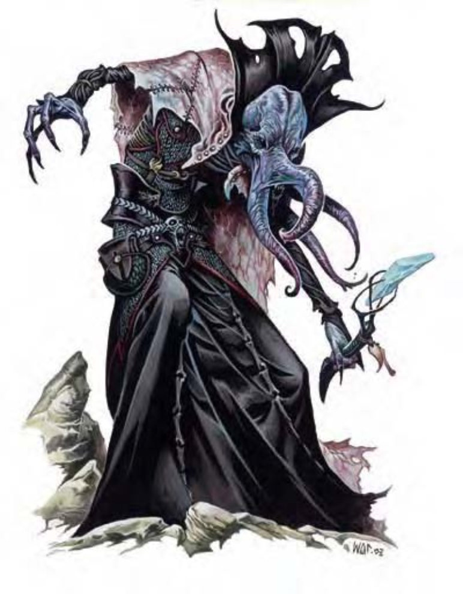

虽然许多夺心魔自小接受法师训练，因钻研此道而在秘法术上获得相当成就；但仍有某些最可怕的灵吸怪成为术士，其操弄魔法的才能可说是天赋异禀。
夺心魔术士的「心灵震爆」(DC=21) 及「魅惑怪物」(DC=21)、「侦测思想」(DC=19)、「暗示」(DC=20) 等灵能所使用的豁免检定DC依其较高的魅力属性值进行修正。夺心魔术士会使用法术来保护自己不受攻击 (「高等隐形术」、「石肤术」、「抵抗能量伤害」、「法师护甲」)、强化战斗能力 (「加速术」、「识破隐形」) 或者用以辅助，为天生攻击方式附上魔力 (「衰竭射线」、「暗示」、「失智之触」)。
一般已知术士法术 (6/8/8/8/5/5；豁免检定DC=17+法术等级、秘法术失效机率10%)：
零级――「秘法锁」、「晕眩术」、「侦测魔法」、「打击死灵」、「闪光术」、「幻音术」、「光亮术」、「阅读魔法」；
一级――「冻寒之触」、「法师护甲」、「魔法飞弹」、「衰弱射线」、「电爪」；
二级――「次级幻影」、「抵抗能量伤害」、「识破隐形」、「失智之触」；
三级――「飞行术」、「加速术」、「衰竭射线」；
四级――「高等隐形术」、「石肤术」。
心灵感应 (超自然)：夺心魔能够透过心灵感应与周遭100英尺范围内其他会使用语言的生物沟通。
| 生命骰 | 8d8+24加9d4+27 (109HP) |
| 先攻 | +8 |
| 速度 | 30英尺 (6格) |
| 防御等级 | 24 (+4敏捷、+3天生、+5「+1秘银炼甲衫」、+2「+2防护戒指」)、接触16、措手不及20 |
| 基本攻击/擒抱 | +10 / +10 |
| 攻击 | 触手+15近战 (1d4) |
| 全力攻击 | 4触手+15近战 (1d4) |
| 占据/触及 | 5英尺 / 5英尺 |
| 特殊攻击 | 「心灵震爆」、灵能、精通擒抱、夺脑、法术 |
| 特殊能力 | 法术抗力34、心灵感应100英尺 |
| 豁免 | 强韧+9、反射+9、意志+16 |
| 属性 | 力量10、敏捷18、体质16、智力18、感知18、魅力24 |
| 技能 | 哄骗+14、专注+22、手艺 (炼金)+13、交涉+11、易容+7 (扮演+9)、躲藏+11、威吓+21、神秘知识+20、界域知识+15、聆听+13、潜行+11、法术辨识+13、侦察+13、生存+4 (+6界域) |
| 专长 | 警觉、战斗施法、闪避、精通先攻、武器娴熟、专攻武器 (触手) |
| 环境 | 地底 |
| 组织 | 单独、真调会 (1，加上2-4个夺心魔) 或教团 (2，加上2-4个夺心魔及6-10个石盲蛮族) |
| 宝藏 | 双倍标准 (包含「+2防护戒指」、「+1秘银炼甲衫」及「+2魅力斗篷」) |
| 阵营 | 通常守序邪恶 |
| 进化 | 视人物职业而定 |
| 等级修正值 | +7 |